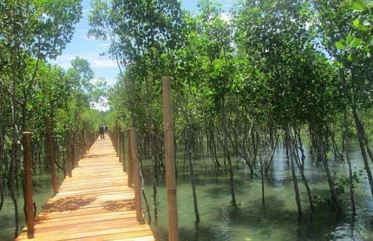

The Bued Mangrove Forest in Alaminos, Pangasinan, Philippines, is a coastal ecosystem reserve notable for its thriving mangrove trees and biodiversity. It serves as both an ecotourism site and a vital natural barrier protecting coastal communities from erosion and storm surges.
Ecological Importance

The Bued Mangrove Forest, located near Alaminos City, plays a vital role in maintaining coastal ecosystems along the Lingayen Gulf. Its dense network of mangrove trees provides shelter and breeding grounds for marine species such as fish, crabs, mollusks, and various invertebrates.
These habitats directly support local fisheries, helping sustain the livelihoods of nearby communities. Beyond biodiversity, the mangrove forest acts as a natural defense system for the shoreline by stabilizing coastal soil, reducing erosion, and trapping sediments.
Mangroves also help filter pollutants and improve water quality, making them essential to the long-term health of surrounding marine environments.
Ecotourism and Activities

Visitors to the Bued Mangrove Forest can explore its unique ecosystem through guided boat tours and paddle experiences that move through calm waterways beneath the mangrove canopy. These tours provide a close-up view of root systems and wildlife, creating an immersive and educational visit.
Elevated wooden boardwalks also allow guests to walk through sections of the forest while observing its flora and fauna. Interpretive signs and guided explanations help visitors understand the importance of mangroves and the role they play in sustainable coastal living.
These activities not only promote environmental awareness but also provide livelihood opportunities for local residents.
Conservation and Community Efforts

The preservation of Bued Mangrove Forest is supported through collaboration between local government units and environmental organizations. Reforestation programs regularly plant new mangrove seedlings to restore degraded areas and strengthen the resilience of the ecosystem.
These initiatives are important for protecting coastal zones from climate-related threats such as stronger storms and rising sea levels. Community involvement is a key part of these efforts, with local residents participating in maintenance, monitoring, and educational activities.
As a result, the forest has become not only a natural attraction but also a model for sustainable coastal resource management in Pangasinan.
Accessibility

Bued Mangrove Forest is conveniently accessible from Alaminos City, located about 15 kilometers from the city center. Its proximity to Hundred Islands National Park makes it an ideal side trip for visitors already exploring the region's coastal attractions.
Travelers can reach the site via local transport or private vehicle, with routes passing through scenic rural and coastal landscapes. Because of its accessibility and educational value, the mangrove forest is increasingly included in ecotourism itineraries that combine relaxation, learning, and environmental appreciation.